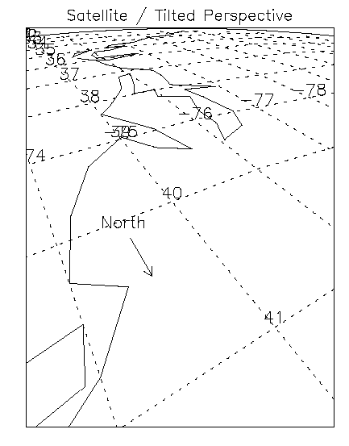
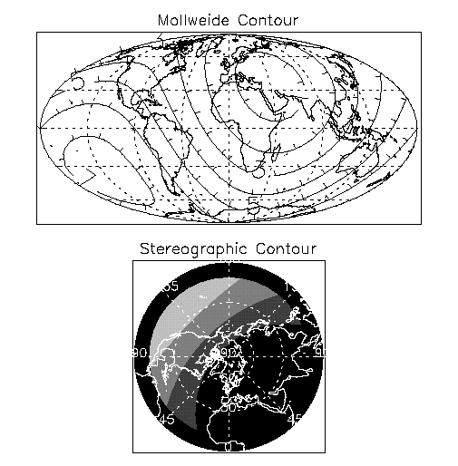

Note: Please see the MAP function, which replicates the functionality of this routine and offers an interactive interface.
The MAP_SET procedure establishes the axis type and coordinate conversion mechanism for mapping points on the earth’s surface, expressed in latitude and longitude, to points on a plane, according to one of several possible map projections. This procedure also sets up the clipping parameters of the region to be mapped, the center of the map, and the polar rotation. Mapping transformation values are stored in the !MAP system variable.
You can select the type of map projection, the map center, polar rotation and geographical limits can all be customized. The system variable !MAP retains the information needed to effect coordinate conversions to the plane and, inversely, from the projection plane to points on the earth in latitude and longitude. Users should not change the values of the fields in !MAP directly.
MAP_SET can also be made to plot the graticule (the grid of latitude and longitude lines) and continental boundaries by setting the keywords GRID and CONTINENTS. Many other types of boundaries can be overplotted on maps using the MAP_CONTINENTS procedure.
Note: Using MAP_SET changes the !X.TYPE system variable.
Note: If the graphics device is changed, MAP_SET (and all other mapping calls) must be re-called for the projection to be set up properly for the new device.
This routine is written in the IDL language. Its source code can be found in map_set.pro in the lib subdirectory of the IDL distribution.
MAP_SET [, P0lat , P0lon , Rot ]
Keywords—Projection Types: [ [, / AITOFF | , / ALBERS | , / AZIMUTHAL | , / CONIC | , / CYLINDRICAL | , / GNOMIC | , / GOODESHOMOLOSINE | , / HAMMER | , / LAMBERT | , / MERCATOR | , / MILLER_CYLINDRICAL | , / MOLLWEIDE | , / ORTHOGRAPHIC | , / ROBINSON | , / SATELLITE | , / SINUSOIDAL | , / STEREOGRAPHIC | , / TRANSVERSE_MERCATOR ] | [, NAME = string ] ]
Keywords—Map Characteristics: [, / ADVANCE ] [, CHARSIZE = value ] [, / CLIP ] [, COLOR = index ] [, / CONTINENTS [, CON_COLOR = index ] [, / HIRES ]] [, E_CONTINENTS = structure ] [, E_GRID = structure ] [, E_HORIZON = structure ] [, GLINESTYLE ={0 | 1 | 2 | 3 | 4 | 5}] [, GLINETHICK = value ] [, / GRID ] [, / HORIZON ] [, LABEL = n {label every n th gridline}] [, LATALIGN = value {0.0 to 1.0}] [, LATDEL = degrees ] [, LATLAB = longitude ] [, LONALIGN = value {0.0 to 1.0}] [, LONDEL = degrees ] [, LONLAB = latitude ] [, MLINESTYLE ={0 | 1 | 2 | 3 | 4 | 5}] [, MLINETHICK = value ] [, / NOBORDER ] [, / NOERASE ] [, REVERSE ={0 | 1 | 2 | 3}] [, TITLE = string ] [, / USA ] [, XMARGIN = value ] [, YMARGIN = value ]
Keywords—Projection Parameters: [, CENTRAL_AZIMUTH = degrees_east_of_north ] [, ELLIPSOID = array ] [, / ISOTROPIC ] [, LIMIT = vector ] [, SAT_P = vector ] [, SCALE = value ] [, STANDARD_PARALLELS = array ]
Graphics Keywords: [, POSITION= [X 0 , Y 0 , X 1 , Y 1 ] ] [, /T3D] [, ZVALUE= value {0 to 1}]
The latitude of the point on the earth’s surface to be mapped to the center of the projection plane. Latitude is measured in degrees North of the equator and P 0lat must be in the range: -90°≤ P 0lat ≤ 90°.
If P 0lat is not set, the default value is zero.
Note: If the longitude and latitude limits (specified via the LIMIT keyword) do not include the point (0,0), you might want to specify the P 0lon and P 0lat arguments explicitly, to avoid unexpected results.
The longitude of the point on the earth’s surface to be mapped to the center of the map projection. Longitude is measured in degrees east of the Greenwich meridian and P 0lon must be in the range: -180°≤ P 0lon ≤ 180°.
If P 0lon is not set, the default value is zero.
Note: If the longitude and latitude limits (specified via the LIMIT keyword) do not include the point (0,0), you might want to specify the P 0lon and P 0lat arguments explicitly, to avoid unexpected results.
Rot is the angle through which the North direction should be rotated around the line L between the earth’s center and the point ( P 0lat , P 0lon ). Rot is measured in degrees with the positive direction being clockwise rotation around line L . Rot can have values from -180° to 180°.
If the center of the map is at the North pole, North is in the direction P 0lon + 180°. If the origin is at the South pole, North is in the direction P 0lon .
The default value of Rot is 0 degrees.
Set this keyword to select the Aitoff projection.
An Aitoff projection centered on the international dateline can be produced by the command:
MAP_SET, 0, 180, /AITOFF, /GRID, /CONTINENTS, /ISOTROPIC, $
TITLE= 'Aitoff Projection'
Set this keyword to select the Albers equal-area conic projection. To specify the latitude of the standard parallels, see STANDARD_PARALLELS .
Set this keyword to select the azimuthal equidistant projection.
If the keyword LIMIT is not set, the whole globe is mapped to the UV plane.
MAP_SET, /AZIMUTHAL, /ISOTROPIC, -90, $
/GRID, LONDEL=20, LATDEL=20, /CONTINENT, $
/HORIZON, TITLE = 'Polar Azimuthal'
This produces a projection centered at the South Pole and shows the entire globe.
Note: With azimuthal projections, the UV plane is tangent to the globe. The point of tangency is projected onto the center of the plane and its latitude and longitude are P0lat and P0lon , respectively. Rot is the angle between North and the v-axis.
Set this keyword to select Lambert’s conformal conic projection with one or two standard parallels. The STANDARD_PARALLELS keyword specifies the latitudes of one or two standard parallels., see STANDARD_PARALLELS . This keyword can be used with the ELLIPSOID keyword.
The following statement produces the map shown in the accompanying figure, which features North America with standard parallels at 20 degrees and 60 degrees:
MAP_SET, /CONIC, 40, -80, STANDARD_PARALLELS=[20,60], $
/ISOTROPIC, LIMIT=[0, -260, 90, 100], $
/GRID, LATDEL=15, LONDEL=20, /CONTINENT, $
TITLE= 'Lambert’s Conic'
Set this keyword to select the cylindrical equidistant projection. Cylindrical is the default map projection.
The following code is used to produce a simple cylindrical equidistant projection and an oblique cylindrical equidistant projection:
MAP_SET, /CYLINDRICAL, 0, 0, /GRID, /CONTINENTS, $
TITLE = 'Simple Cylindrical Equidistant'
Now rotate the projection by 45°:
MAP_SET, /CYLINDRICAL, 0, 0, 45, $
/GRID, /CONTINENT, /HORIZON, $
TITLE='Oblique Cylindrical Equidistant'
Set this keyword to select the Goode’s Homolosine Projection. The central latitude for this projection is fixed on the equator, 0 degrees latitude. This projection is interrupted, as the inventor originally intended, and is best viewed with the central longitude set to 0.
The following statement produced the example of Goode’s Homolosine projection:
MAP_SET, /GOODESHOMOLOSINE, 0, 0, /ISOTROPIC, /GRID, $
LATDEL=15, LONDEL=20, /HORIZON, E_CONTINENTS={FILL:1}, $
TITLE='Goode Homolosine'
Set this keyword to select the gnomonic projection. If default clipping is enabled, this projection will display a maximum of ± 60° from the center of the projection area when the center is at either the equator or one of the poles.
MAP_SET, /GNOMIC, 40, -105, LIMIT = [20, -130, 70, -70], $
/ISOTROPIC, /GRID, /CONTINENT, $
TITLE = 'Oblique Gnomonic'
This projection is centered around the point at latitude 40 degrees and longitude –105 degrees. The region on the globe that is mapped lies between 20 degrees and 70 degrees of latitude and –130 degrees and –70 degrees of longitude.
Set this keyword to select the Hammer-Aitoff equal area projection.
A Hammer-Aitoff projection centered on the international dateline can be produced by the command:
MAP_SET, 0, 180, /HAMMER, /GRID, /CONTINENTS, /ISOTROPIC, $
/HORIZON, TITLE= 'Hammer-Aitoff Projection'
Set this keyword to select Lambert’s azimuthal equal area projection.
The following statements create a projection that shows the Northern Hemisphere rotated counterclockwise 105 degrees, and the continents are filled with a solid color.
MAP_SET, /LAMBERT, 90, 0, -105, /ISOTROPIC, $
/GRID, LATDEL=20, LONDEL=20, $
/CONTINENTS, E_CONTINENTS={FILL:1}, /HORIZON, $
TITLE = 'Polar Lambert'
Set this keyword to select the Mercator projection. Note that this projection will not display regions within ± 10° of the poles of projection.
By default, the keyword LIMIT is set to [–80, –180, 80, 180] because of the great distortions around the poles when the equator is selected.The following statement produces a simple Mercator projection:
MAP_SET, /MERCATOR, 0, 0, /ISOTROPIC, $
/GRID, /CONTINENTS, $
TITLE = 'Simple Mercator'
When the eccentricity of the Earth is not important, global scale Transverse Mercator projections (see TRANSVERSE_MERCATOR ) can be easily created using the Mercator projection with the CENTRAL_AZIMUTH keyword set to 90 degrees, and setting Rot to rotate the map 90 degrees. For example, to create the Transverse Mercator map showing North and South America, with a central meridian of –90 degrees West and centered on the Equator, use the following statement:
MAP_SET, /MERCATOR, 0, -75, 90, CENTRAL_AZIMUTH=90, $
/ISOTROPIC, LIMIT= [32,-130, 70,-86, -5,-34, -58, -67], $
/GRID, LATDEL=15, LONDEL=15, /CONTINENTS, $
TITLE = 'Transverse Mercator'
Set this keyword to select the Miller Cylindrical projection.
Set this keyword to select the Mollweide projection.
If the keyword LIMIT is not set, the whole globe will be mapped to the plane. The following statement produces a Mollweide projection in oblique form:
MAP_SET, /MOLLWEIDE, 45, 0, /ISOTROPIC, $
/GRID, LATDEL=20, LONDEL=20, $
/HORIZON, E_CONTINENTS={FILL:1}, $
TITLE='Oblique Mollweide'
Since the center of the projection is not on the equator, parallels of latitude are not straight lines, just as they are not straight lines with an oblique Mercator or cylindrical equidistant projection.
Set this keyword to a string indicating the projection that you wish to use. A list of available projections can be found using MAP_PROJ_INFO, PROJ_NAMES=names . This keyword will override any of the individual projection keywords.
Set this keyword to select the orthographic projection. Note that this projection will display a maximum of ± 90° from the center of the projection area.
The following statements are used to produce an orthographic projection centered over Eastern Spain at a scale of 70 million to 1:
MAP_SET, /ORTHOGRAPHIC, 40, 0, SCALE=70e6, /CONTINENTS, $
/GRID, LONDEL=15, LATDEL=15, $
TITLE = 'Oblique Orthographic'
Set this keyword to select the Robinson pseudo-cylindrical projection.
Note: The central meridian should always be 0 degrees longitude to retain the correct balance of shapes, sizes, and relative positions.
The next statement produces a Robinson projection.
MAP_SET, /ROBINSON, 0, 0, /ISOTROPIC, /GRID, $
/HORIZON, E_CONTINENTS={FILL:1}, TITLE='Robinson'
Set this keyword to select the satellite projection. For the satellite projection, P 0Lat and P 0Lon represent the latitude and longitude of the sub-satellite point. Three additional parameters, P , Omega , and Gamma (supplied as a three-element vector argument to the SAT_P keyword), are required where:
Note: Since all meridians and parallels are oblique lines or arcs, the LIMIT keyword must be supplied as an eight-element vector representing four points that delineate the limits of the map. The extent of the map limits, when expressed in latitude/longitude is a complicated polygon, rather than a simple quadrilateral.
See Labeling and Drawing Projections for an example.
Set this keyword to select the sinusoidal projection.
The parameters P 0Lat and Rot of the MAP_SET procedure must be zero. If they are not, an error message results and the procedure MAP_SET will reset both of these parameters to zero and continue. By default, P 0Lon (the central longitude) is zero, but the user can set it to any other value between –180 and 180. If the keyword LIMIT is undefined, the entire globe is the region selected for mapping.
The following statements produces the sinusoidal map of the whole globe centered at longitude 0 degrees and latitude 0 degrees:
MAP_SET, /SINUSOIDAL, /ISOTROPIC, $
/CONTINENTS, TITLE='Sinusoidal'
MAP_GRID, LONDEL=20, /HORIZON
Set this keyword to select the stereographic projection. Note that if default clipping is enabled, this projection will display a maximum of ± 90° from the center of the projection area.
The following statement uses the stereographic projection to draw the hemisphere centered on the equator at longitude –105 degrees and produces an equatorial stereographic map:
MAP_SET, /STEREOGRAPHIC, 0, -105, /ISOTROPIC, $
/GRID, LATDEL = 20, LONDEL = 20, /HORIZON, /CONTINENT, $
TITLE = 'Equatorial Stereographic'
Since the LATDEL and LONDEL keywords are set to 20, parallels and meridians are spaced 20 degrees apart. The GRID and CONTINENT keywords signal that the grid and continents should be drawn.
Set this keyword to select the Transverse Mercator projection, also called the UTM or Gauss-Krueger projection. This projection works well with the ellipsoid form. The default ellipsoid is the Clarke 1866 ellipsoid. To change the default ellipsoid characteristics, see ELLIPSOID .
To create a UTM map, centered near London, with a scale of 10 million to one, type the following:
MAP_SET, /TRANSVERSE_MERCATOR, 51, 0, SCALE=10e6, $
/GRID, LATDEL=2.5, LONDEL=2.5, /LABEL, LONLAB=48, $
/CONTINENTS, E_CONT={COUNTRIES:1, COASTS:1}, $
TITLE='UTM Projection'
If this keyword is set, and the screen is set to display multiple plots (using !P.MULTI), IDL will automatically advance to the next plot position. If there are no plot positions remaining, IDL will erase the screen and use the first plot position. If this keyword is not set, and NOERASE is also not set, IDL always erases the screen.
The size of the characters used for the labels. The default is 1.
Set this keyword to clip the map using the map-specific graphics technique. The default is to perform map-specific clipping. Set CLIP=0 to disable clipping.
Note: Clipping controlled by the CLIP keyword applies only to the map itself. In order to disable general clipping within the plot window, you must set the system variable !P.NOCLIP=1. For more information, see NOCLIP .
The color index of the map border in the plotting window.
Set this keyword to plot the continental boundaries. Note that if you are using the low-resolution map database (if the HIRES keyword is not set), outlines for continents, islands, and lakes are drawn when the CONTINENTS keyword is set. If you are using the high-resolution map database (if the HIRES keyword is set), only continental outlines are drawn when the CONTINENTS keyword is set. To draw islands and lakes when using the high-resolution map database, use the COASTS keyword to the MAP_CONTINENTS procedure.
The color index for continent outlines if CONTINENTS is set.
Set this keyword to a structure containing extra keywords to be passed to MAP_CONTINENTS. For example, to fill continents, the FILL keyword of MAP_CONTINENTS is set to 1. To fill the continents with MAP_SET, specify E_CONTINENTS={FILL:1}.
Set this keyword to a structure containing extra keywords to be passed to MAP_GRID. For example, to label every other gridline on a grid of parallels and meridians, the LABEL keyword of MAP_GRID is set to 2. To do the same with MAP_SET, specify E_GRID={LABEL:2}.
Set this keyword to a structure containing extra keywords to be set as modifiers to the HORIZON keyword.
To draw a Stereographic map, with the sphere filled in color index 3, enter:
MAP_SET, 0, 0, /STEREO, /HORIZON, /ISOTROPIC, $
E_HORIZON={FILL:1, COLOR:3}
Set this keyword to a line style index used to draw the grid of parallels and meridians. See MLINESTYLE for a list of available linestyles. The default is 1, drawing a grid of dotted lines.
Set this keyword to the thickness of the gridlines drawn if the GRID keyword is set. The default is 1.
Set this keyword to draw the grid of parallels and meridians.
Set this keyword to use the high-resolution continent outlines when drawing continents. This keyword only has effect if the CONTINENTS keyword is also set.
Set this keyword to draw a horizon line, when the projection in use permits. The horizon delineates the boundary of the sphere. See E_HORIZON for more options.
Set this keyword to label the parallels and meridians with their corresponding latitudes and longitudes. Setting this keyword to an integer will cause every LABEL gridline to be labeled (that is, if LABEL=3 then every third gridline will be labeled). The starting point for determining which gridlines are labeled is the minimum latitude or longitude (-180 to 180).
The alignment of the text baseline for latitude labels. A value of 0.0 left justifies the label, 1.0 right justifies it, and 0.5 centers it.
The longitude at which to place latitude labels. The default is the center longitude of the map.
Set this keyword equal to the spacing (in degrees) between parallels of latitude drawn by the MAP_GRID procedure. If this keyword is not set, a suitable value is determined from the current map projection.
The alignment of the text baseline for longitude labels. A value of 0.0 left justifies the label, 1.0 right justifies it, and 0.5 centers it.
Set this keyword equal to the spacing (in degrees) between meridians of longitude drawn by the MAP_GRID procedure. If this keyword is not set, a suitable value is determined from the current map projection.
The latitude at which to place longitude labels. The default is the center latitude of the map.
The line style index used for continental boundaries. Linestyles are described in the table below. The default is 0 for solid.
|
Index |
Linestyle |
|
0 |
Solid |
|
1 |
Dotted |
|
2 |
Dashed |
|
3 |
Dash Dot |
|
4 |
Dash Dot |
|
5 |
Long Dashes |
The line thickness used for continental boundaries. The default is 2.
Set this keyword to not draw a border around the map. The map will fill the extent of the plotting region. If NOBORDER is not specified, a margin equalling 1% of the plotting region will be placed between the map and the border.
If this keyword is set, IDL does not erase the screen before setting up the map projection. The default behavior is to erase the screen. This keyword is ignored if ADVANCE is set.
Set this keyword to one of the following values to reverse the X and/or Y axes:
A string containing the main title for the map. The title appears centered above the map window.
Set this keyword to draw borders for each state in the United States.
A scalar or two-element vector that specifies the vertical margin between the map and screen border in character units. If a scalar is specified, the same margin will be used on both sides of the map.
A scalar or two-element vector that specifies in the horizontal margin between the map and screen border in character units. If a scalar is specified, the same margin will be used on the top and bottom of the map.
Set this keyword to the angle of the central azimuth, in degrees east of North. This keyword can be used with the following projections: Cylindrical, Mercator, Miller, Mollweide, and Sinusoidal. The default is 0 degrees. The pole is placed at an azimuth of CENTRAL_AZIMUTH degrees CCW of North, as specified by the Rot argument.
Set this keyword to a 3-element array, [ a , e 2 , k 0 ], defining the ellipsoid for the Transverse Mercator or Lambert Conic projections.
The default is the Clarke 1866 ellipsoid, [6378206.4, 0.00676866, 0.9996].
This keyword can be used with the CONIC or TRANSVERSE_MERCATOR keywords. For CONIC if ELLIPSOID is not supplied, a sphere of normalized radius 1.0 is used. For TRANSVERSE_MERCATOR if ELLIPSOID is not supplied, the default is the Clarke 1866 ellipsoid, [6378206.4, 0.00676866, 0.9996].
Set this keyword to produce a map that has the same scale in the X and Y directions.
Note: The X and Y axes will be scaled isotropically and then fit within the rectangle defined by the POSITION keyword; one of the axes may be shortened. See POSITION for more information.
A four- or eight-element vector that specifies the limits of the map.
As a four-element vector, LIMIT has the form [ Lat min , Lon min , Lat max , Lon max ] that specifies the boundaries of the region to be mapped. ( Lat min , Lon min ) and ( Lat max , Lon max ) are the latitudes and longitudes of two points diagonal from each other on the region’s boundary.
For more complex regions or projections, the eight-element vector, LIMIT has the form: [ Lat 0 , Lon 0 , Lat 1 , Lon 1 , Lat 2 , Lon 2 , Lat 3 , Lon 3 ]. These four latitude/longitude pairs describe, respectively, four points on the left, top, right, and bottom edges of the map extent.
Note: If the longitude range in LIMIT is less than or equal to 180 degrees, map clipping is performed in lat/lon coordinates before the transform. If the longitude range is greater than 180 degrees, map clipping is done in Cartesian coordinates after the transform. For non-cylindrical projections, clipping after the transformation to Cartesian coordinates means that some lat/lon points that fall outside the bounds specified by LIMIT may not be clipped. This occurs when the transformed lat/lon points fall inside the cartesian clipping rectangle.
A three-element vector containing three parameters, P , Omega , and Gamma, that must be supplied when using the SATELLITE projection where:
Set this keyword to construct an isotropic map with the given scale, set to the ratio of 1: scale . If SCALE is not specified, the map is fit to the window. The typical scale for global maps is in the ratio of between 1:100 million and 1:200 million. For continents, the typical scale is in the ratio of approximately 1:50 million. For example, SCALE=100E6 sets the scale at the center of the map to 1:100 million, which is in the same ratio as 1 inch to 1578 miles (1 cm to 1000 km).
Set this keyword to a one- or two-element array defining, respectively, one or two standard parallels for conic projections.
See Direct Graphics Keywords for the description of the following graphics and plotting keywords:
To draw a Stereographic map, with the sphere filled in color index 3:
MAP_SET, 0, 0, /STEREO, /HORIZON, /ISOTROPIC, $
E_HORIZON={FILL:1, COLOR:3}
Labeling and drawing a vector on a satellite projection.
MAP_SET, /SATELLITE, SAT_P=[1.0251, 55, 150], 41.5, -74., $
/ISOTROPIC, /HORIZON, $
LIMIT=[39, -74, 33, -80, 40, -77, 41,-74], $
/CONTINENTS, TITLE='Satellite / Tilted Perspective'
; Set up the satellite projection:
MAP_GRID, /LABEL, LATLAB=-75, LONLAB=39, LATDEL=1, LONDEL=1
; Get North vector:
p = convert_coord(-74.5, [40.2, 40.5], /TO_NORM)
; Draw North arrow:
ARROW, p(0,0), p(1,0), p(0,1), p(1,1), /NORMAL
XYOUTS, -74.5, 40.1, 'North', ALIGNMENT=0.5
The map in the accompanying figure, which shows the eastern seaboard of the United States from an altitude of about 160km, above Newburgh, NY, was produced with the previous code.
|
 |
The parameters for this satellite projection are:
The procedures PLOT, OPLOT, PLOTS, XYOUTS, and CONTOUR can be used to display and annotate geographical data on maps created by the routines MAP_SET, MAP_GRID, and MAP_CONTINENTS. The MAP_IMAGE procedure can be used to warp regularly-gridded images to map projections.
The following simple example creates a CONTOUR plot over a Mollweide map projection and then over a polar stereographic projection. The resulting map is shown below.
|
 |
First, create the Mollweide plot:
; Make a 10 degree latitude/longitude grid covering the Earth:
lat = REPLICATE(10., 37) # FINDGEN(19) - 90.
lon = FINDGEN(37) # REPLICATE(10, 19)
; Convert lat and lon to Cartesian coordinates:
X = COS(!DTOR * lon) * COS(!DTOR * lat)
Y = SIN(!DTOR * lon) * COS(!DTOR * lat)
Z = SIN(!DTOR * lat)
; Create the function to be plotted, set it equal
; to the distance squared from (1,1,1):
F = (X-1.)^2 + (Y-1.)^2 + (Z-1.)^2
; Create a plotting window
WINDOW, 0, TITLE='Mollweide Contour'
MAP_SET, /MOLLWEIDE, 0, 0, /ISOTROPIC, $
/HORIZON, /GRID, /CONTINENTS, $
TITLE='Mollweide Contour'
CONTOUR, F, lon, lat, NLEVELS=7, $
/OVERPLOT, /DOWNHILL, /FOLLOW
Next, create the Stereographic plot:
; Create another plotting window
WINDOW, 1, TITLE='Stereographic Contour'
; Fill the contours over the northern hemisphere and
; display in a polar sterographic projection:
MAP_SET, /STEREO, 90, 0, $
/ISOTROPIC, /HORIZON, E_HORIZON={FILL:0}, $
TITLE='Stereographic Contour'
; Display points in the northern hemisphere only:
CONTOUR, F(*,10:*), lon(*,10:*), lat(*,10:*), $
/OVERPLOT, /FILL, NLEVELS=5
MAP_GRID, /LABEL, COLOR=255
MAP_CONTINENTS, COLOR=255
Filling contours or polygons over maps that cover more than a hemisphere will produce incorrect results. This is because of the ambiguity between polygons that enclose an area, and those that enclose the entire surface of the sphere outside the area; and because of the ambiguity of determining the clockwise-ness of polygons on a sphere that cover more than a hemisphere.
|
Pre 4.0 |
Introduced |
MAP_CONTINENTS Procedure , MAPGRID , MAP_IMAGE , MAP_PROJ_INIT